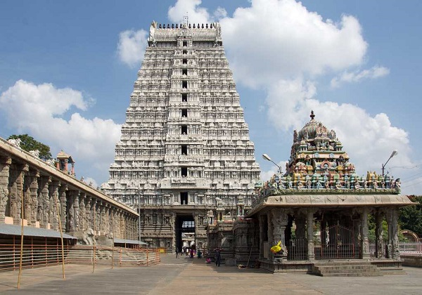

Arunachalesvara Temple (also called Annamalaiyar Temple) is a Hindu temple dedicated to the deity Shiva, located at the base of Arunachala hill in the town of Tiruvannamalai in Tamil Nadu, India. It is significant to the Hindu sect of Shaivism as one of the temples associated with the five elements, the Pancha Bhuta Sthalams, and specifically the element of fire, or Agni. Shiva is worshipped as Arunachalesvara or Annamalaiyar, and is represented by the lingam, with his idol referred to as Agni lingam. His consort Parvati is depicted as Unnamalai Amman or Apithakucha Ambal.[2][3] The presiding deity is revered in the 7th-century Tamil Saiva canonical work, the Tevaram, written by Tamil saint poets known as the nayanars and classified as Paadal Petra Sthalam. The 9th-century Shaiva saint poet Manikkavasagar composed the Tiruvempavai here.